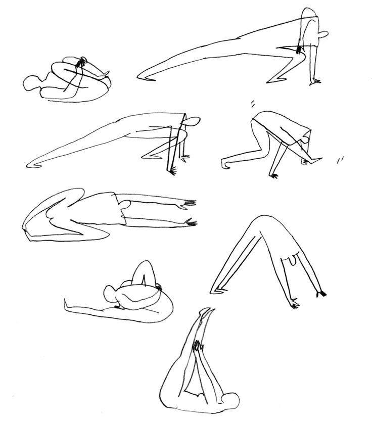
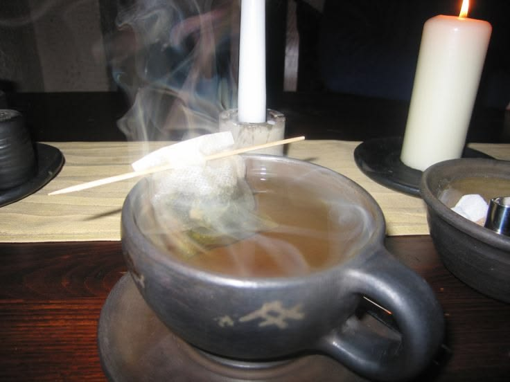
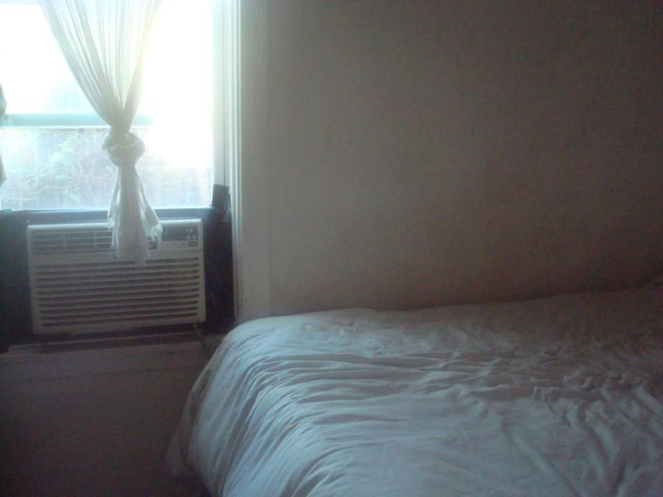
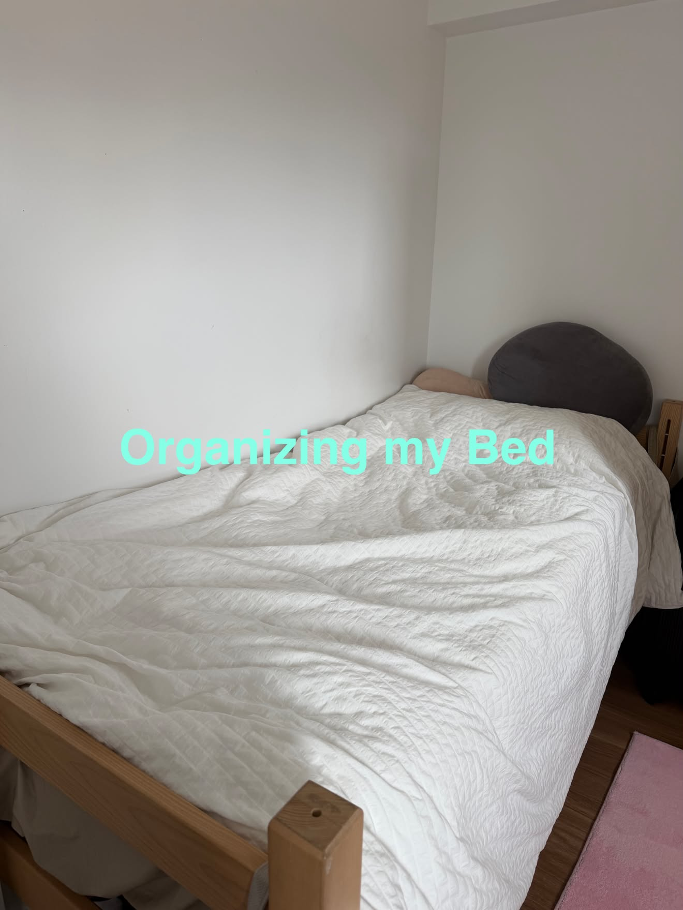
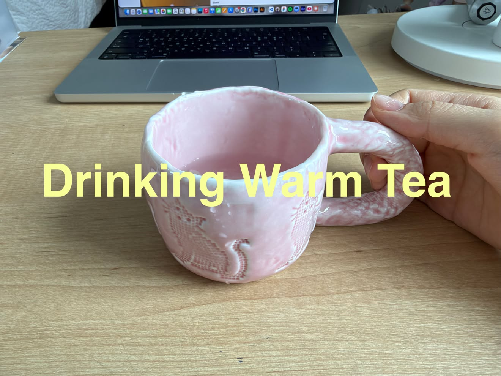
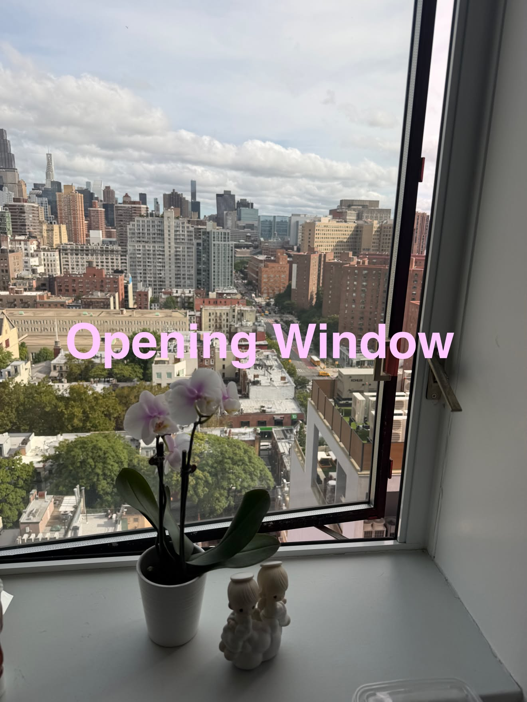
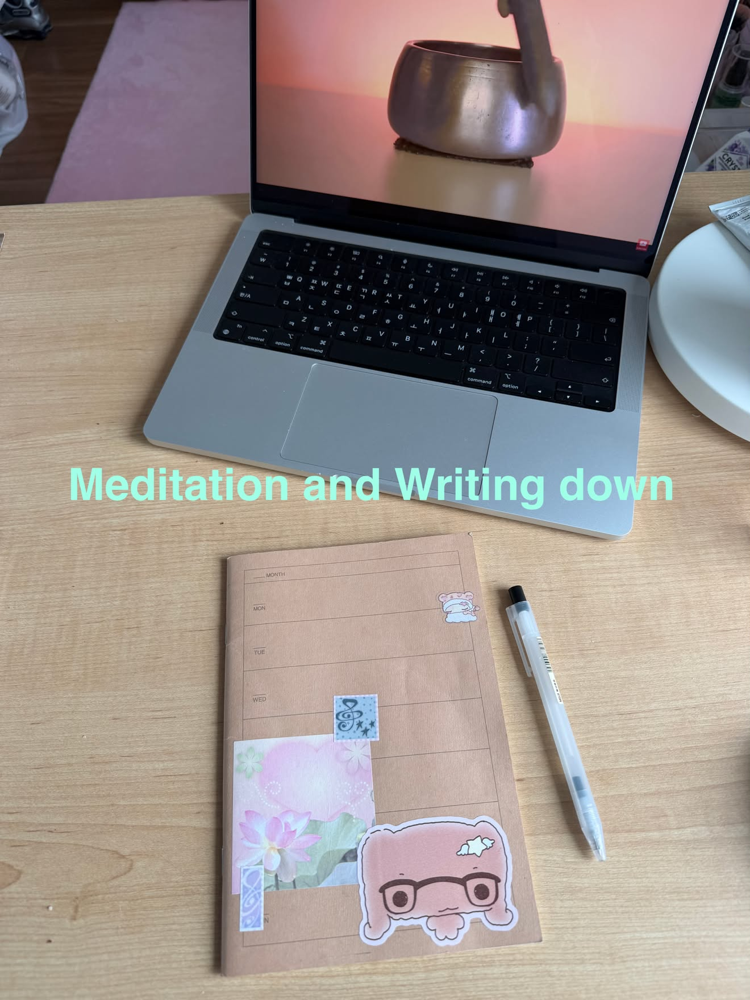

STEP ONE
Stretch Your Body
After waking up, gently stretch your arms, legs, and back. Stretching helps your body wake up and feel ready for the day.

STEP TWO
Drink Warm Tea
Make a cup of warm tea and drink it slowly. It helps you feel comfortable and gives you a peaceful moment.
STEP THREE
Open the Window
Open the window and enjoy the fresh air and sunlight. Natural light can help you feel awake and refreshed.

STEP FOUR
Make Your Bed
Organize your blankets and pillows. Making your bed keeps your room clean and gives you a small sense of accomplishment.
STEP FIVE
Meditate or Write
Spend a few quiet minutes meditating or writing down something you are thankful for. This helps you begin the day with a positive mindset.
RECIPE IN PRACTICE
My Recipe Tried by a Participant
I shared my morning recipe with another person and asked them to follow the instructions. They completed four parts of the recipe and documented their experience with photos.

ACTIVITY ONE
Making the Bed
The participant organized their blankets and pillows to begin the day with a clean space.

ACTIVITY TWO
Making Warm Tea
The participant prepared a cup of warm tea and took a quiet moment to enjoy it.

ACTIVITY THREE
Opening the Window
The participant opened the window to enjoy fresh air and natural light.

ACTIVITY FOUR
Meditating
The participant spent a few quiet minutes meditating before continuing with their day.
The participant completed four parts of my morning recipe. Their photos show that the instructions can be followed and adapted to another person’s daily routine.
A second participant’s result will be added soon.